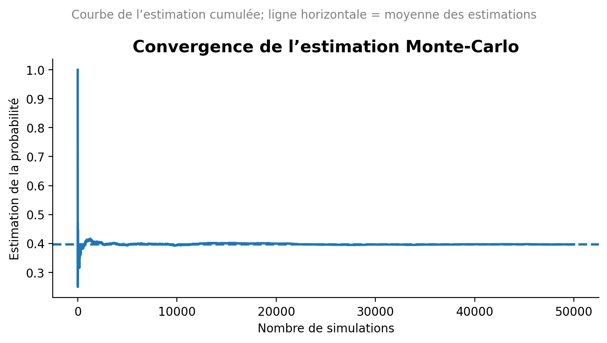

Vous trouverez ici certains exercices de la fiche de TD, qui vous permettront de mieux comprendre les concepts abordés par le professeur pendant les cours. N’hésitez pas à me contacter si vous avez des questions ou des suggestions. Je mettrai l’accent sur la rédaction des corrections.
Espaces probabilisés
Je reviendrai ici sur l’exercice 5 que nous n’avons pas eu la possibilité de mettre oeuvre la simulation monte Carlo.
Correction de l’exercice 5
Nous sélectionnons un entier au hasard parmi les N = 5,000 entiers qui sont dans l’intervalle [0, 4999]. Quelle est la probabilité qu’il soit divisible par 4,7 ou 10 ?
Modifier le code R vu en cours pour estimer cette probabilité par une simulation de Monte-Carlo pour vérifier ce résultat. Vous utiliserez au moins 50,000 simulations.
Pour résoudre cette exercice, il faut d’abord définir l’espace probabilisé. L’espace probabilisé est défini par le triplet (Ω, F, P) où:
Ω est l’ensemble des résultats possibles. Dans notre cas, Ω = {0, 1, 2, …, 4999}.
F est la σ-algèbre des événements. Ici, nous pouvons considérer les événements comme les sous-ensembles de Ω.
P est la mesure de probabilité. Dans notre cas, chaque entier a une probabilité égale d’être sélectionné. On dit encore que la loi de probabilité est uniforme sur Ω.
Le cardinal de l’ensemble Ω est |Ω| = 5000. La probabilité d’un élément spécifique dans Ω est donc \(P({x}) = \frac{1}{5000}\) pour tout x dans Ω.
Après avoir défini l’espace probabilisé, nous pouvons maintenant définir l’événement A que nous voulons étudier. De ce fait, définissons les événements suivants:
\(A_4\) : l’événement que l’entier sélectionné est divisible par 4.
\(A_7\) : l’événement que l’entier sélectionné est divisible par 7.
\(A_{10}\) : l’événement que l’entier sélectionné est divisible par 10. L’événement A que nous voulons étudier est l’union de ces trois événements:
\[
A = A_4 \cup A_7 \cup A_{10}
\]
Nous cherchons à calculer la probabilité de l’événement A, c’est-à-dire \(P(A)\). Pour cela, nous allons utiliser la formule inclusion-exclusion: \[
\begin{aligned}
\mathbb{P}(A_4 \cup A_7 \cup A_{10})
&= \mathbb{P}(A_4) + \mathbb{P}(A_7) + \mathbb{P}(A_{10}) \\
&\quad - \big\{\, \mathbb{P}(A_4 \cap A_7) + \mathbb{P}(A_4 \cap A_{10}) + \mathbb{P}(A_7 \cap A_{10}) \,\big\} \\
&\quad + \mathbb{P}(A_4 \cap A_7 \cap A_{10}).
\end{aligned}
\]
Calculons maintenant chaque terme de cette formule: Pour calculer chaque probabilité, nous devons compter le nombre d’entiers dans Ω qui satisfont chaque condition \(A_i\). Et la probabilité de chaque événement est donnée par le rapport du nombre d’entiers satisfaisant la condition sur le cardinal de l’ensemble Ω :
Pour \(A_4\) : Les entiers divisibles par 4 sont 0, 4, 8, …, 4996. Ainsi le nombre d’entiers divisibles par 4 est de la forme \(4k\) et qui vérifient \(0 \leq 4(k+1) \leq 5000 < 4(k+2)\), donc de cette inégalité, on déduit que \(k\) vérifie l’inégalité sous dessous :
\[
k \leq \frac{4999}{4} < k+1.
\]
Donc le nombre d’entiers divisibles par 4 correspond à la partie entière de \(\frac{4999}{4}\) plus 1 (pour inclure le 0), soit: \[
\text{nombre d'entiers divisibles par 4} = \left\lfloor\frac{4999}{4}\right\rfloor + 1 = 1249 + 1 = 1250.
\]
Donc, la probabilité que l’entier sélectionné soit divisible par 4 est: \[
P(A_4) = \frac{1250}{5000} = 0.25.
\]
Pour \(A_7\) : Les entiers divisibles par 7 sont 0, 7, 14, …, 4996. En suivant le même raisonnement que pour \(A_4\), nous trouvons:
Donc, la probabilité que l’entier sélectionné soit divisible par 7 est: \[
P(A_7) = \frac{715}{5000} = 0.143.
\]
Pour \(A_{10}\) : Les entiers divisibles par 10 sont 0, 10, 20, …, 4990. En suivant le même raisonnement que pour \(A_4\), nous trouvons: \[
\text{nombre d'entiers divisibles par 10} = \left\lfloor\frac{4999}{10}\right\rfloor + 1 = 499 + 1 = 500.
\]
Donc, la probabilité que l’entier sélectionné soit divisible par 10 est: \[
P(A_{10}) = \frac{500}{5000} = 0.1.
\]
Pour \(A_4 \cap A_7\) : Les entiers qui sont divisibles par 4 et 7 sont ceux qui sont divisibles par 28 qui est le PPCM de 4 et 7. En suivant le même raisonnement que pour \(A_4\), nous trouvons: \[
\text{nombre d'entiers divisibles par 28} = \left\lfloor\frac{4999}{28}\right\rfloor + 1 = 178 + 1 = 179.
\]
Donc, la probabilité que l’entier sélectionné soit divisible par 4 et 7 est:
Pour \(A_4 \cap A_{10}\) : Les entiers qui sont divisibles par 4 et 10 sont ceux qui sont divisibles par 20 qui est le PPCM de 4 et 10. En suivant le même raisonnement que pour \(A_4, nous trouvons:\)$ = + 1 = 249 + 1 = 250. $$
Donc, la probabilité que l’entier sélectionné soit divisible par 4 et 10 est: \[
P(A_4 \cap A_{10}) = \frac{250}{5000} = 0.05.
\]
Pour \(A_7 \cap A_{10}\) : Les entiers qui sont divisibles par 7 et 10 sont ceux qui sont divisibles par 70 qui est le PPCM de 7 et 10. En suivant le même raisonnement que pour $A_4, nous trouvons:
Donc, la probabilité que l’entier sélectionné soit divisible par 7 et 10 est: \[
P(A_7 \cap A_{10}) = \frac{72}{5000} = 0.0144.
\]
Pour \(A_4 \cap A_7 \cap A_{10}\) : Les entiers qui sont divisibles par 4, 7 et 10 sont ceux qui sont divisibles par 140 qui est le PPCM de 4, 7 et 10. En suivant le même raisonnement que pour \(A_4\), nous trouvons:
Donc, la probabilité qu’un entier sélectionné au hasard parmi les 5000 entiers soit divisible par 4, 7 ou 10 est de 0.4 ou 40%.
Maintenant, nous allons vérifier ce résultat par une simulation de Monte-Carlo en R avec au moins 50,000 simulations. Une simulation de Monte-Carlo est une méthode statistique qui utilise des échantillons aléatoires pour estimer des propriétés mathématiques ou physiques comme des espérances, des intégrales ou des probabilités. Cette méthode fonctionne en générant un grand nombre de scénarios aléatoires et en observant les résultats pour obtenir une estimation statistique :
On fixe le nombre de simulations, disons n = 50000.
On initialise un compteur pour le nombre de succès (entiers divisibles par 4, 7 ou 10).
Pour chaque simulation, on génère un entier aléatoire entre 0 et 4999.
On vérifie si cet entier est divisible par 4, 7 ou 10. Si c’est le cas, on incrémente le compteur de succès.
Après avoir effectué toutes les simulations, on calcule la probabilité estimée comme le ratio du nombre de succès sur le nombre total de simulations.
Voici un exemple de code R pour effectuer cette simulation de Monte-Carlo :
# Monte Carlo in Python with running estimate and plot (matplotlib only)import numpy as npimport matplotlib.pyplot as plt# --- Parameters (mirror your R snippet) ---seed =123N =4999# sample from 0..N (inclusive)M =50_000# number of simulationsrng = np.random.default_rng(seed)x = rng.integers(low=0, high=N+1, size=M) # uniform integers in [0, N]is_div = (x %4==0) | (x %7==0) | (x %10==0)# Final Monte Carlo estimate (same as R's mean(is_div))p_hat = is_div.mean()# Running estimates vs number of simulationsrunning_est = np.cumsum(is_div) / np.arange(1, M +1)# Mean of the running estimates (to draw an horizontal reference line)mean_running = running_est.mean()# --- Plot ---plt.figure(figsize=(7.24, 4.07), dpi=100) # ~724x407 pxplt.plot(np.arange(1, M +1), running_est, linewidth=2)plt.axhline(mean_running, linestyle="--", linewidth=2)plt.xlabel("Nombre de simulations")plt.ylabel("Estimation de la probabilité")plt.title("Convergence de l’estimation Monte-Carlo", fontsize=14, weight="bold")plt.suptitle("Courbe de l’estimation cumulée; ligne horizontale = moyenne des estimations", fontsize=10, color="gray")# Style cues similar to the provided seaborn exampleax = plt.gca()for spine in ["top", "right"]: ax.spines[spine].set_visible(False)plt.grid(False)plt.tight_layout()plt.show()p_hat

np.float64(0.3965)
May 28, 2025
Rappels de la séance précédente
L’objectif de la prémière séance de TD était de consolider vos connaissances sur les espaces probabilisés et sur les probabilités conditionnelles.
Vous devez actuellement être capable de :
Définir un espace probabilisé (Ω, F, P).
Utiliser les propriétés des probabilités pour calculer des probabilités d’événements simples et composés.
Vous devez maitriser les lois de Morgan :
La loi de Morgan pour l’union : \(\overline{A \cup B} = \overline{A} \cap \overline{B}\)
La loi de Morgan pour l’intersection : \(\overline{A \cap B} = \overline{A} \cup \overline{B}\)
Appliquer la formule d’inclusion-exclusion pour calculer la probabilité de l’union de deux événements :
\[
P(A \cup B) = P(A) + P(B) - P(A \cap B)
\]
Appliquer la formule d’inclusion-exclusion pour calculer la probabilité de l’union de plusieurs événements :
Calculer des probabilités conditionnelles en utilisant la formule de Bayes :
\[
P(A|B) = \frac{P(A \cap B)}{P(B)}.
\]
ou bien encore :
\[
P(A\cap B) = P(A|B) \cdot P(B).
\]
Appliquer la loi des probabilités totales pour décomposer des probabilités complexes en utilisant des événements disjoints et exhaustifs :
Par exemple, si \(C_1, C_2\) sont deux événements disjoints et exhaustifs, c’est-à-dire que \(C_1 \cap C_2 = \emptyset\) et \(C_1 \cup C_2 = \Omega\), alors pour tout événement A, on a :
A [label=“(Ω, F, P) — espace probabilisé”]; B [label=“X : variable aléatoire”]; C [label=“Loi de X”]; D [label=“Type de variable”, shape=diamond]; E [label=“Discrète”]; F [label=“Continue”]; G [label=“Fonction de répartition F_X”]; H [label=“Fonction génératrice des moments M_X(t)”]; I [label=“Moments : E[X], Var(X)”];
A -> B [label=“mesure”]; B -> C [label=“théorème de transfert”]; B -> D; D -> E; D -> F; C -> G; C -> H; C -> I; }```